Gravity & spacetime
Black-hole physics, relativistic dynamics, scattering amplitudes, and fundamental theories.
Connected by curiosity
São Paulo Astronomy, Relativity and Cosmology network
Our network
We connect researchers and students at institutions in São Paulo and collaborating groups across Brazil. Our work spans astronomy, relativity, cosmology, and particle physics: from black holes and gravitational waves to the origin and evolution of the Universe.
Black-hole physics, relativistic dynamics, scattering amplitudes, and fundamental theories.
Dark matter, dark energy, cosmic surveys, gravitational lensing, and numerical simulations.
Gravitational waves, standard sirens, neutrinos, and multi-messenger observations.
People behind the science
Faculty, researchers & students
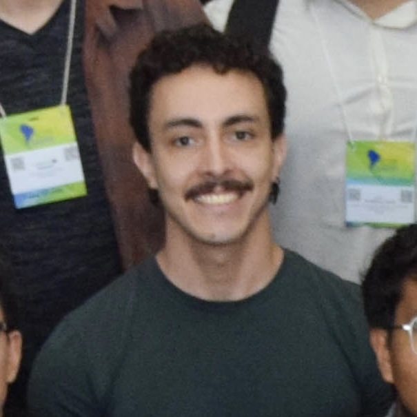
PhD studentIFT–UNESP
Gravitational waves, post-Newtonian expansion, effective field theory.

PhD studentIF–USP
The Hubble tension, Type Ia supernovae, the cosmic distance ladder, standardization of supernova apparent magnitudes.
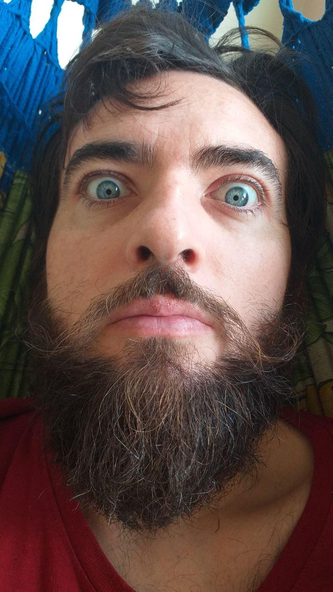
ProfessorIF–USP
Black-hole physics, relativistic two-body dynamics, gravitational self-force, gravitational-wave modelling, strong-field gravity.
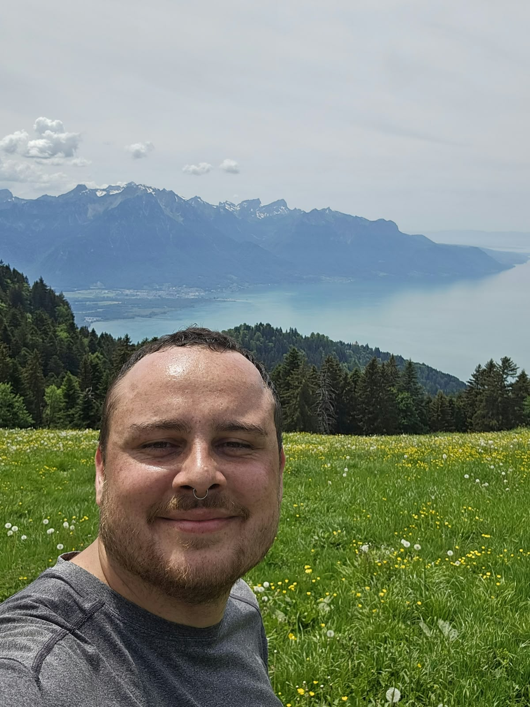
PhD studentPPGCosmo–UFES
Gravitational-wave cosmology, third-generation gravitational-wave detectors.
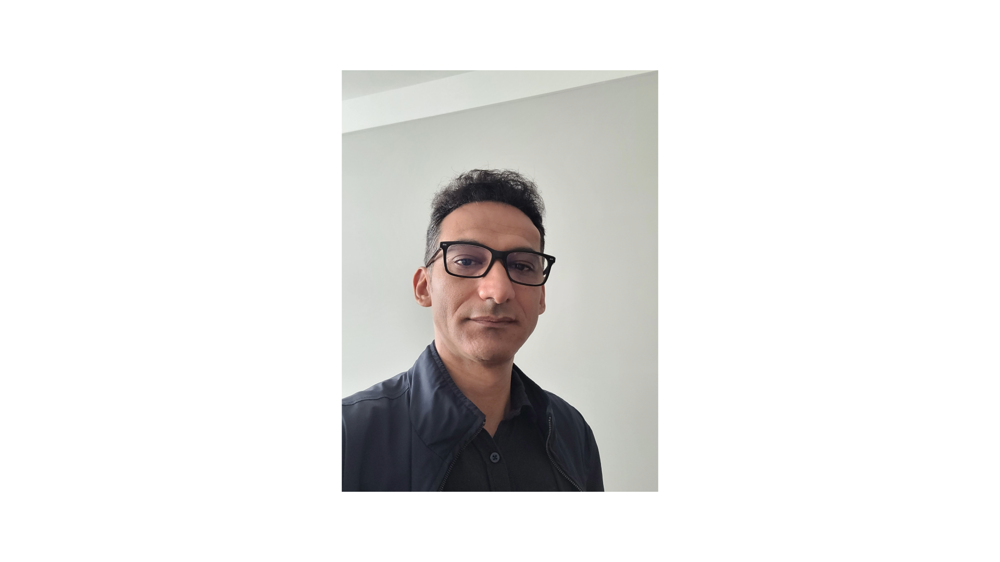
ProfessorIF–USP
Cosmology, standard candles, cosmic microwave background, gamma-ray astronomy.
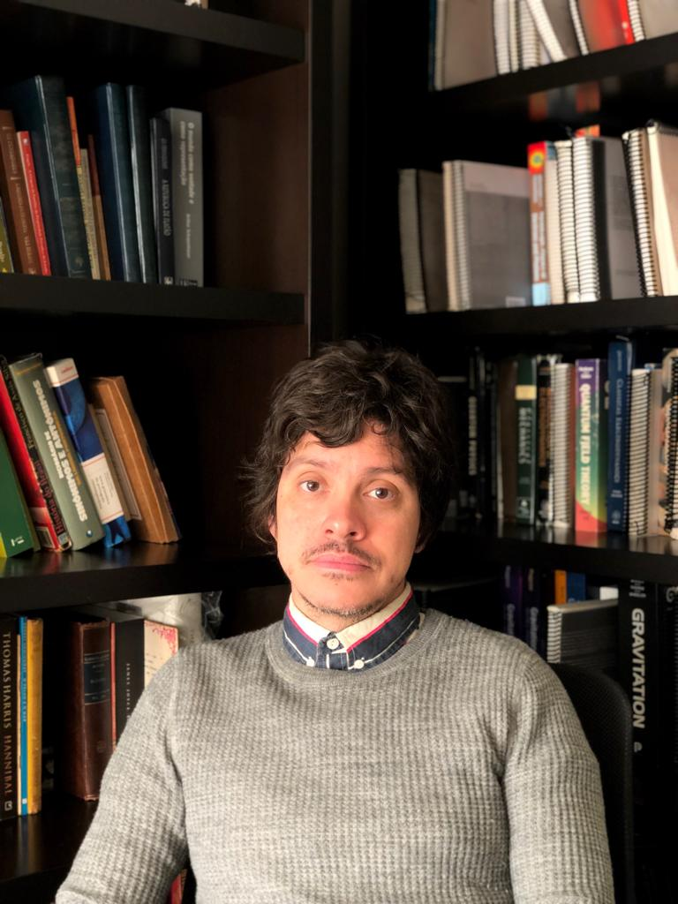
ProfessorIF–USP
Scattering amplitudes in gauge theories and gravity; classical and quantum gravity; inflationary cosmology; particle physics, quantum field theory, and superstring theory.
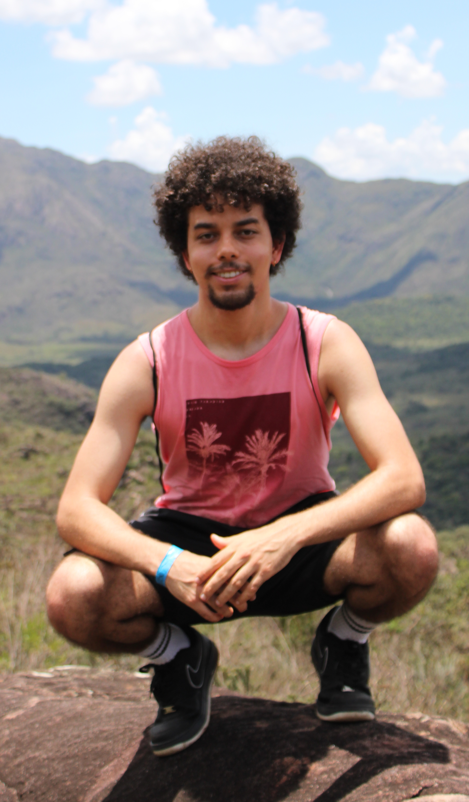
PhD studentAffiliation pending
Large-scale structure of the universe, dark energy, cosmological parameters, dark matter, weak lensing.
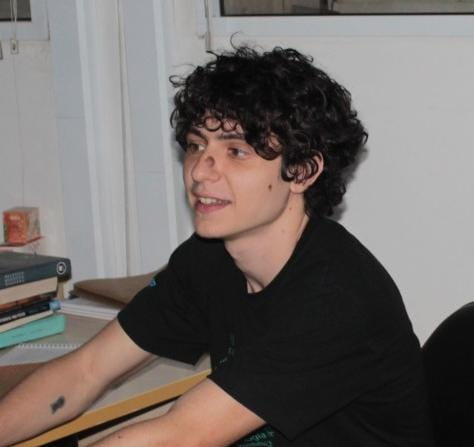
PhD studentIFT–UNESP
Cosmology, quintessence, dark sector phenomenology, large-scale structure.
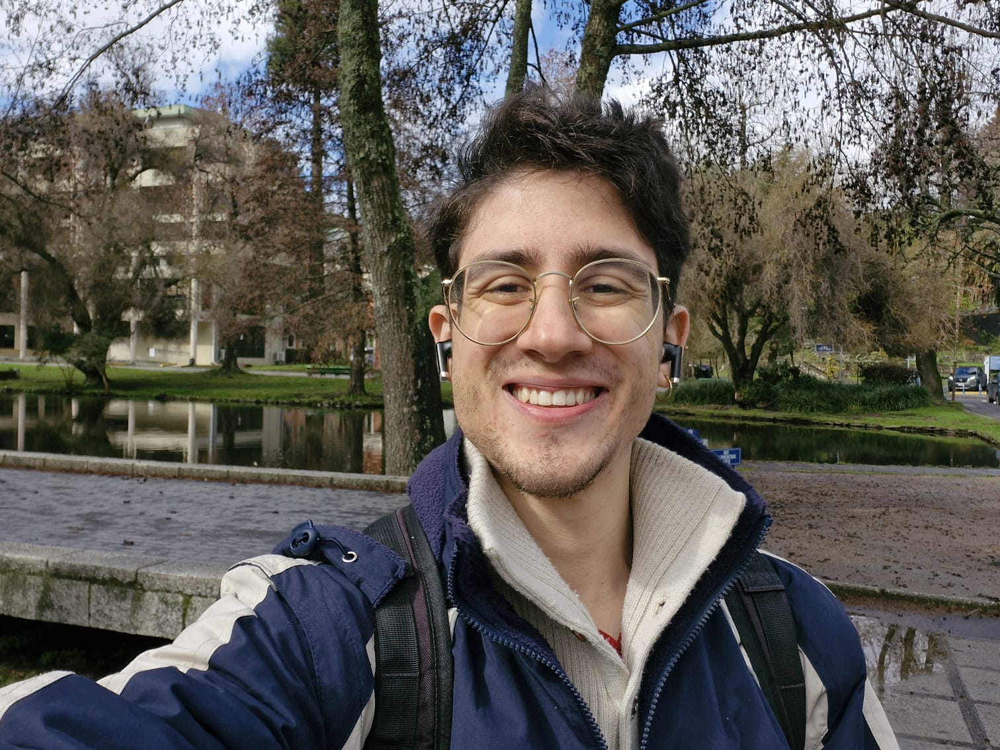
PhD studentIFT–UNESP
Gravitational waves, effective field theory, cosmology, primordial black holes.
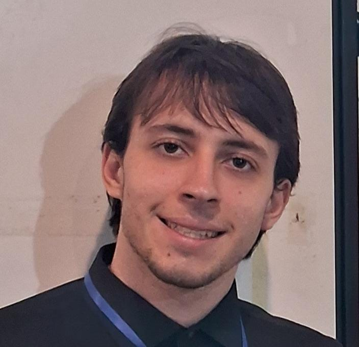
Master’s studentIFT–UNESP
The gravitational two-body problem, post-Newtonian approximation.
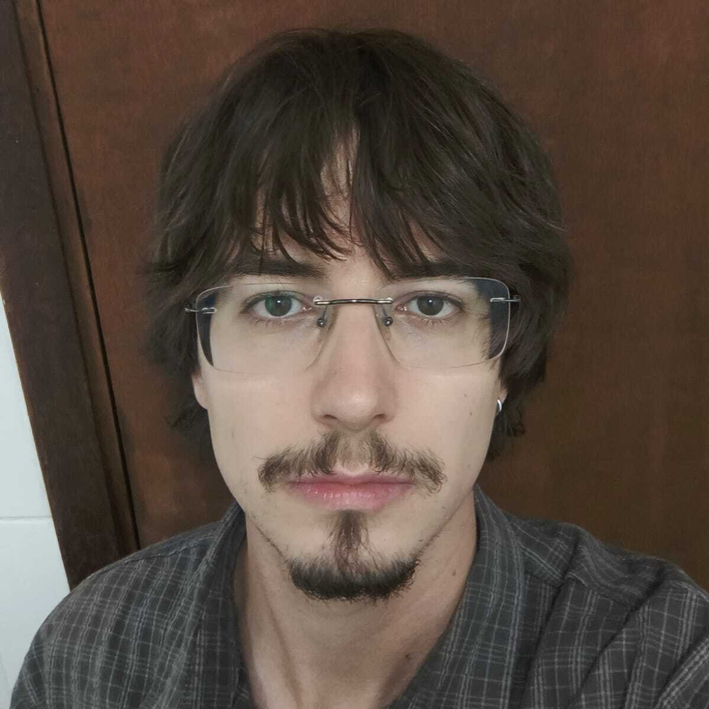
Master’s studentIF–USP
General relativity, gravitational waves, quantum gravity.
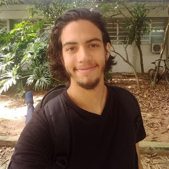
Postdoctoral researcherIFT–UNESP
Observational cosmology, cosmological tests with gravitational waves, correlations between gravitational waves and large-scale structure.
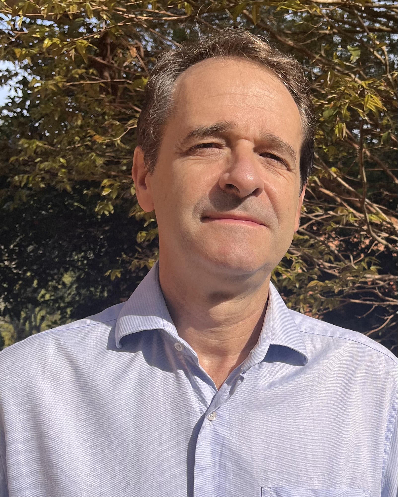
ProfessorIF–USP
Cosmology, large-scale structure, the halo–galaxy connection, multi-tracer and multi-messenger approaches to cosmology.
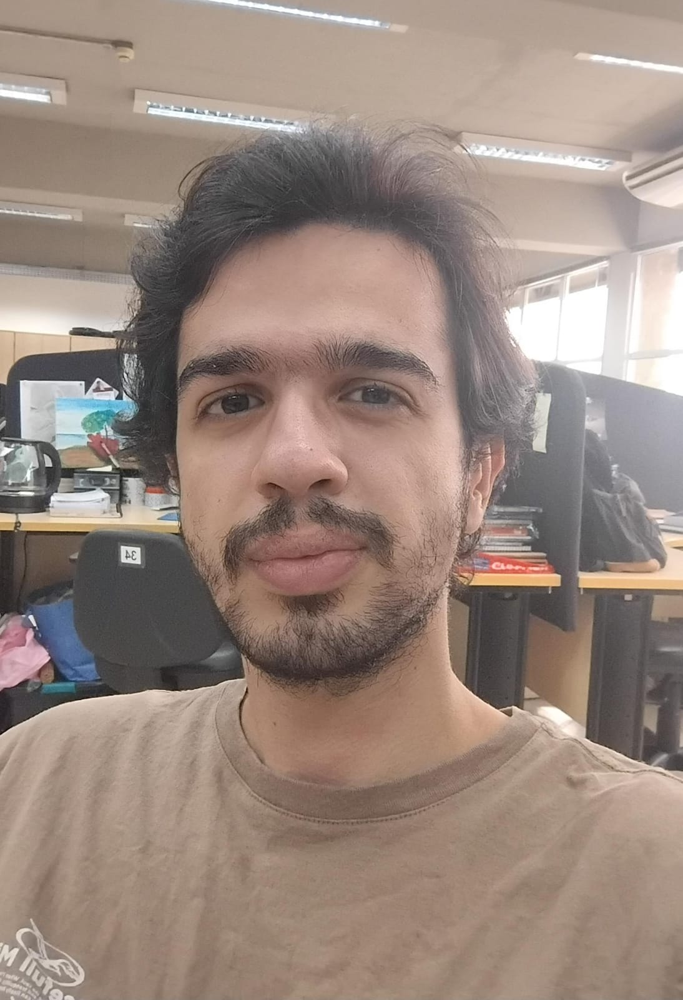
Master’s studentIFT–UNESP
Gravitational waves.
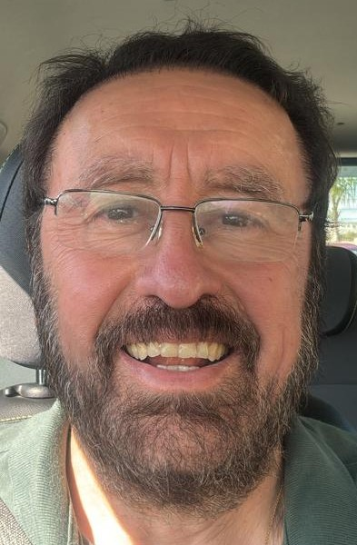
ProfessorIMC–UNIFEI
The general relativistic two-body problem, gravitational self-force.
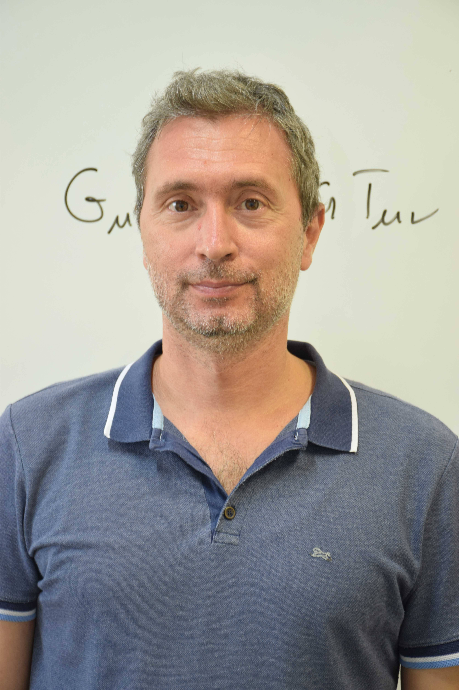
ResearcherIFT–UNESP
Gravitational waves, post-Newtonian approximation, standard sirens, cosmology, large-scale structure.

ProfessorIFT–UNESP
Dark energy, dark matter, large-scale structure.
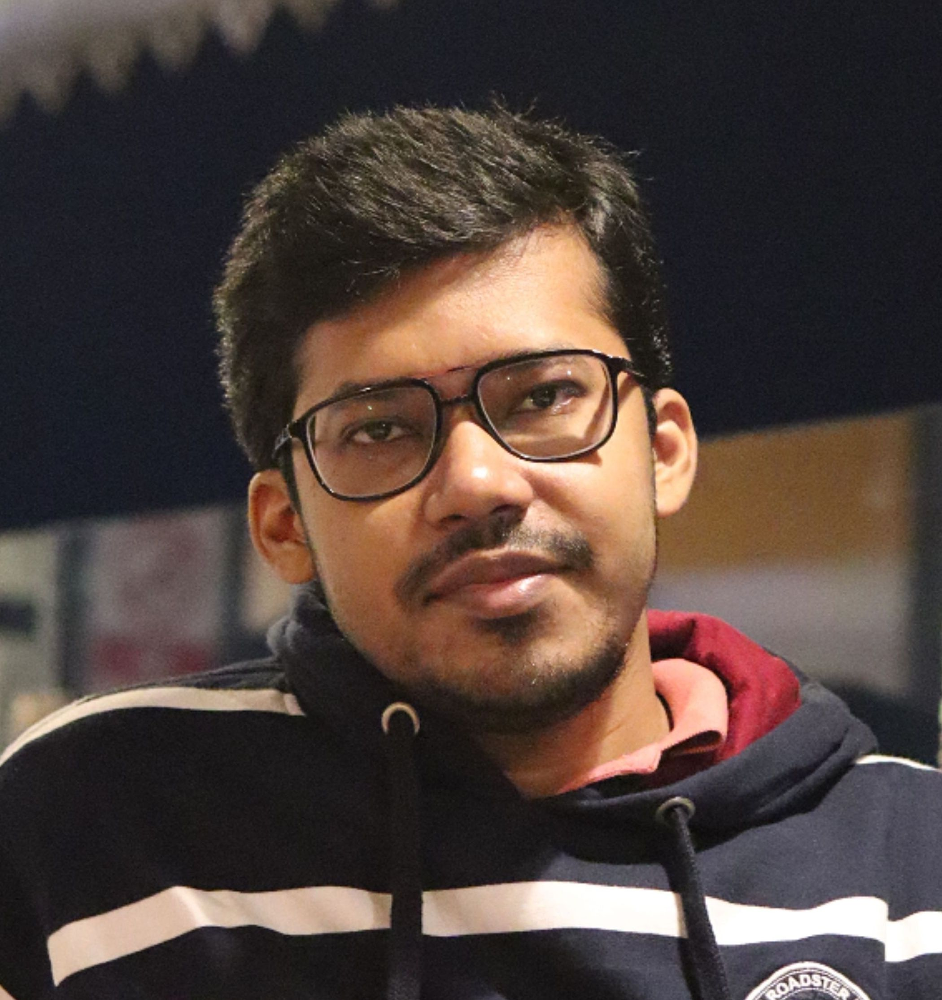
Postdoctoral researcherICTP–SAIFR / IFT–UNESP
Gravitational waves, scattering amplitudes.
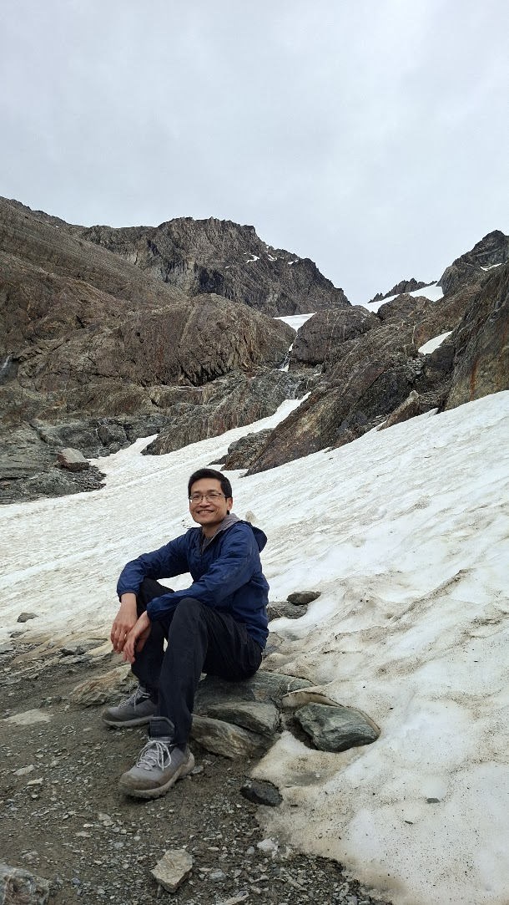
ProfessorCCNH–UFABC
Baryogenesis, leptogenesis, inflation, neutrinos, dark matter, astroparticles.
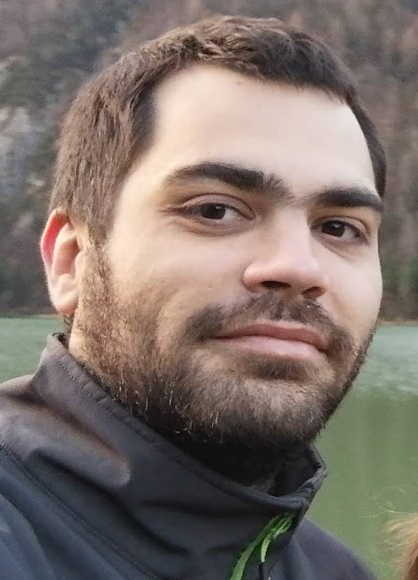
ProfessorIF–USP
Cosmology, cosmological simulations, large-scale structure, galaxy clusters, baryonic effects.

PhD studentPPGCosmo–UFES
Cosmology, gravitational waves.
Research in motion
A selection from members’ verified publication lists. Visit each profile for up to five recent papers with the member among the first five authors.
arXiv preprint
arXiv preprint
arXiv preprint
arXiv preprint
arXiv preprint
Around the network
Find current schools, workshops, and research meetings with our local partners.
ICTP–SAIFR programmeBrowse current physics and astronomy positions and check each listing’s deadline.
INSPIRE jobs